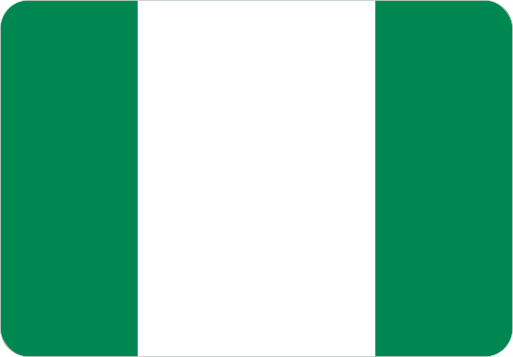

Top Online Casino & Betting Offers for Nigeria
We review licensed online casinos and betting sites available for Nigerian players, focusing on security, bonuses, payment methods, and overall reliability.
Trusted reviews, licensed platforms, and exclusive offers for Nigerian players.
We review licensed online casinos and betting sites available for Nigerian players, focusing on security, bonuses, payment methods, and overall reliability.